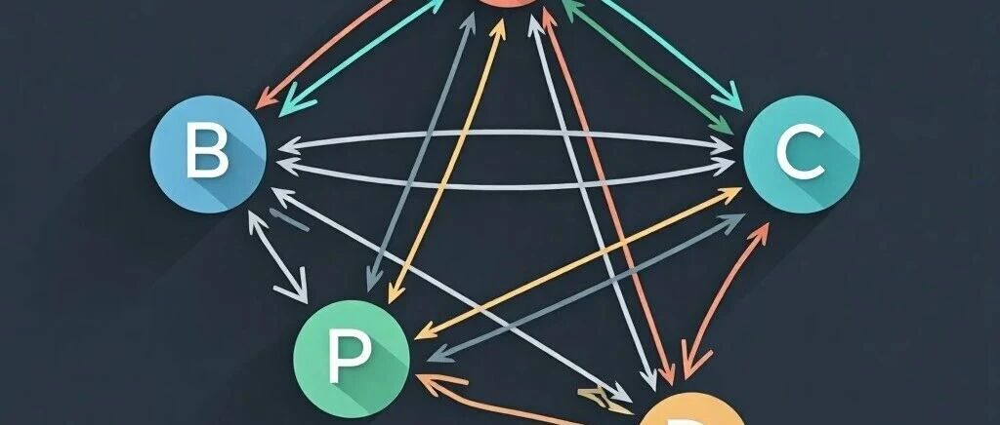

办案实录 | 企业的合伙人挪用公司资金被刑拘，新法下寻求的三个辩护突破口（持续更新）

这是一次真实的客户咨询，也是一场即时的团队推演。
挪用资金罪的认定，在2026年新司法解释施行后，正迎来重要的辩护窗口期。我们把整个办案过程记录下来，希望对面临类似困境的企业家与家属有所启发。
01 焦虑的家属：“他真的不是为了偷钱”
那天下午，一位四十多岁的女士匆匆走进我们律所。她的眼神里写满疲惫，双手始终绞在一起。
她是当事人A的妻子。A与B合伙经营一家公司，A负责人脉与管理，B出资。去年，公司账上有一笔约400万元的资金被A转到了自己另一个投资项目上，后来项目亏损，钱回不来。B知情后，给了半年时间弥补亏空，但最终未能凑齐。上个月，公安机关以挪用资金罪将A带走，现羁押在看守所。
“高律师，他真的不是为了偷钱。他做那个项目，也是想给公司多找一条路……”她的声音越来越急促。
我让她先喝口水，慢慢说。
02 三个关键辩点：从“慌”到“有方向”
在刑辩实务中，挪用资金罪的认定有三大核心要件：主体身份、资金用途、主观故意。我逐一向她拆解。
第一，A在公司到底是什么身份？
A是创始合伙人，负责经营管理。这家公司有没有正式的财务审批制度？有没有明确的资金调拨流程？如果没有，那么股东之间的资金调配，究竟是刑事意义上的“挪用”，还是企业内部治理中的“违规调用”？
很多法院判例表明：如果行为人本身就拥有资金管理权限，且公司缺乏规范的财务制度，不宜轻易入罪。
第二，钱去了哪里？
A将资金转到了自己的另一个投资项目，不是用于赌博、挥霍，也不是转入个人账户消费。这一点至关重要。
2026年新施行的司法解释，对“归个人使用”的认定标准进一步收紧。如果资金最终流向企业经营活动，而非个人私用，那么“归个人使用”这一构成要件就很难成立。辩护空间很大。
第三，B给了半年宽限期。
这说明在报案之前，双方是有过和解意愿的。虽然最终没能补足，但这里面有没有客观障碍？比如市场突变、项目无法及时回款？这些事实会直接影响对A主观恶意的判断，进而在量刑上产生从轻情节。
客户听完，神情稍稍松弛了一些。她点头说：“这些信息我都没想过，原来法律上有这么多层次。”
03 团队推演：新司法解释带来的量刑窗口
送走客户后，我立刻走进会议室。刑辩团队合伙人孙律师已经白板上画好了关系图——A、B、公司C、项目D，箭头交错。
“刚接的挪用资金案，2026年新规正好能用上。”我说。
孙律师放下笔：“新规那个参照挪用公款标准的？数额档次和量刑都变了。你先说案情。”

孙律师在白板上写下四个字：管理权限。
“A本身就是负责公司经营管理的合伙人。如果公司没有明确的财务审批流程，那么股东之间的资金调配，到底是刑事犯罪还是内部纠纷？”他顿了顿，“很多判例认为，没有虚报、冒领、截留等行为，仅仅是违规调用资金，不宜轻易入罪。”
辩点二：资金用途决定“归个人使用”能否成立
我在白板上补充：“如果能证明资金转到了另一个投资项目，而不是用于个人消费、还债、买房，那么‘归个人使用’就站不住脚。新司法解释对公诉方的证明要求提高了——他们必须查清每一笔资金的最终流向。”
辩点三：2026年新法的量刑利好
孙律师翻出新司法解释的条文。
“以前挪用资金罪400万，基准刑可能在三到七年之间。新规参照挪用公款标准，数额档次整体上浮，很多案子可以往低档靠。”他指了指白板，“再加上A有半年补救的主观意愿，只是客观亏损无法补足——这是非常典型的从轻情节。”
04 下一步行动：会见、取证、检索
推演结束，我们形成了清晰的办案计划。
第一，尽快会见A，核实两个关键事实：
公司是否有书面的财务审批制度？
转款时是否曾征得B的口头或书面同意？
这两点，直接决定定性——是刑事犯罪，还是民事纠纷。
第二，同步检索上海地区2026年新规后的类案判例，为后续辩护意见提供裁判支持。
会见的路上：
写在最后
挪用资金罪，是企业家和高管最容易踩中的刑事风险之一。但不是每一笔公司资金的调用都等于犯罪。主体身份、资金用途、主观意图、公司治理规范程度……每一个环节都可能成为辩护的突破口。
2026年新司法解释已经施行，数额标准变了，证明标准也变了。对于正在经历刑事追诉的当事人和家属来说，窗口期，就是机会期。
如果你或你的家人正面临类似困境，欢迎联系我们。我们专注于刑事辩护，已代理多起挪用资金罪案件。
本文系真实办案记录，当事人信息已做脱敏处理，将持续更新。